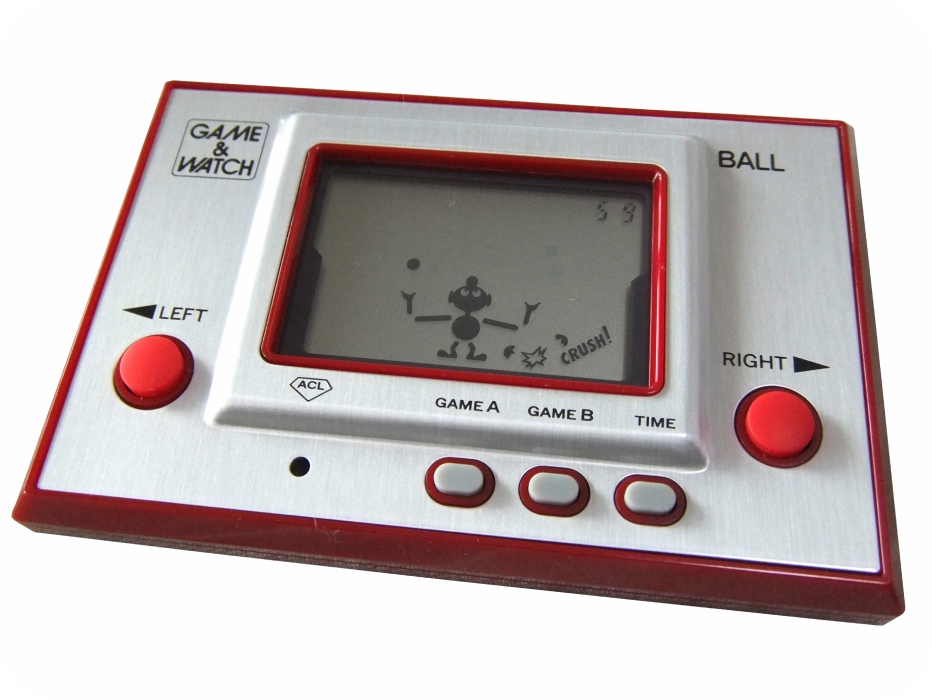
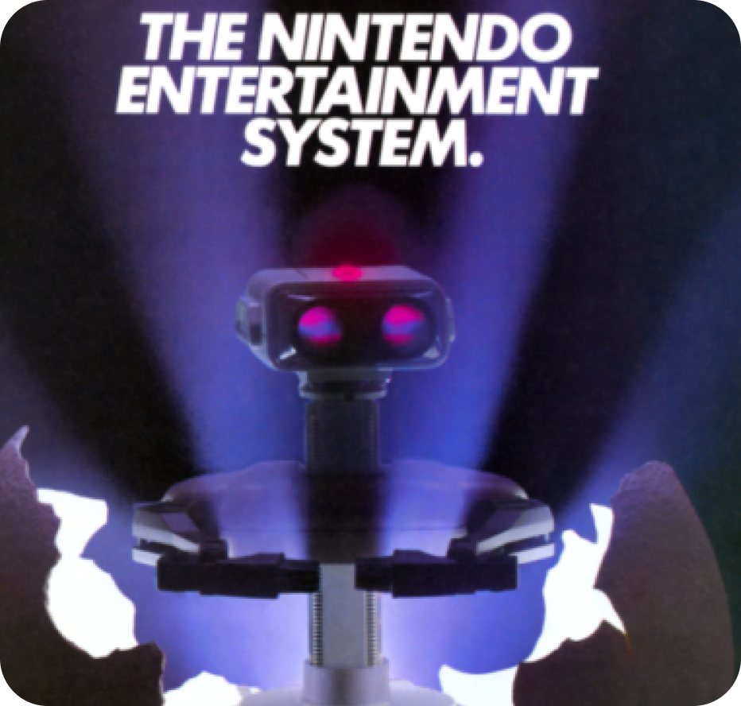

History of Nintendo
Early Video Games
Arcade Games, Magnavox Odyssey, Atari ... Quisque nunc
lectus, tempor sit amet tellus in, condimentum varius nisi.
Praesent eu elit non dolor lacinia euismod. Donec vel
rhoncus est. Sed consectetur massa quis euismod interdum.
Aenean mauris libero, accumsan eget suscipit a, facilisis at
nunc. Quisque at nisl mattis diam blandit laoreet.


Where it began
Game and Watch system released in 1977 ... Quisque nunc
lectus, tempor sit amet tellus in, condimentum varius nisi.
Praesent eu elit non dolor lacinia euismod. Donec vel rhoncus
est. Sed consectetur massa quis euismod interdum. Aenean
mauris libero, accumsan eget suscipit a, facilisis at nunc.
Quisque at nisl mattis diam blandit laoreet.
Nintendo’s Rise
Success of the NES and Nintendo’s future consoles ...
Quisque nunc lectus, tempor sit amet tellus in,
condimentum varius nisi. Praesent eu elit non dolor
lacinia euismod. Donec vel rhoncus est. Sed consectetur
massa quis euismod interdum. Aenean mauris libero,
accumsan eget suscipit a, facilisis at nunc. Quisque at
nisl mattis diam blandit laoreet.
